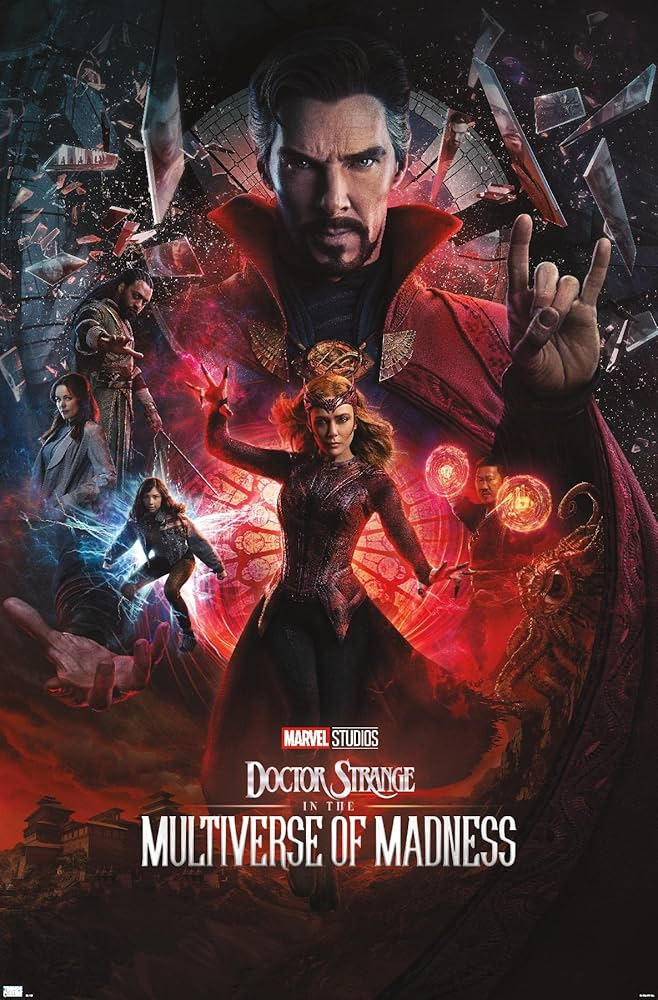

Doctor Stranger
El doctor Stephen Strange (Benedict Cumberbatch) es un reputado neurocirujano de Nueva York. Todo lo que tiene de brillante y talentoso, lo tiene también de arrogante y vanidoso. Tras sufrir un terrible accidente de coche, sus manos quedan dañadas, cosa que arruina por completo su carrera. Después de varias intervenciones quirúrgicas de su colega, el doctor Nicodemus West (Michael Stuhlbarg), las manos de Stephen Strange consiguen recuperar su movilidad parcial, pero no la suficiente pericia como para volver a operar.
Después de estos dramáticos sucesos, y de tener que abandonar definitivamente su profesión, Stephen Strange decide realizar un viaje de sanación al Himalaya que le cambiará la vida. Alejándose de la medicina tradicional, buscará una nueva cura para su lesión. Será entonces cuando conozca a El Anciano (Tilda Swinton), quien le enseñará que el mundo en el que vive es una realidad entre muchas. Descubrirá así un mundo oculto de dimensiones mágicas, y durante su entrenamiento con el maestro místico se revelarán sus poderes psíquicos, como la telepatía, la proyección astral o el teletransporte, que utilizará para combatir al mal.